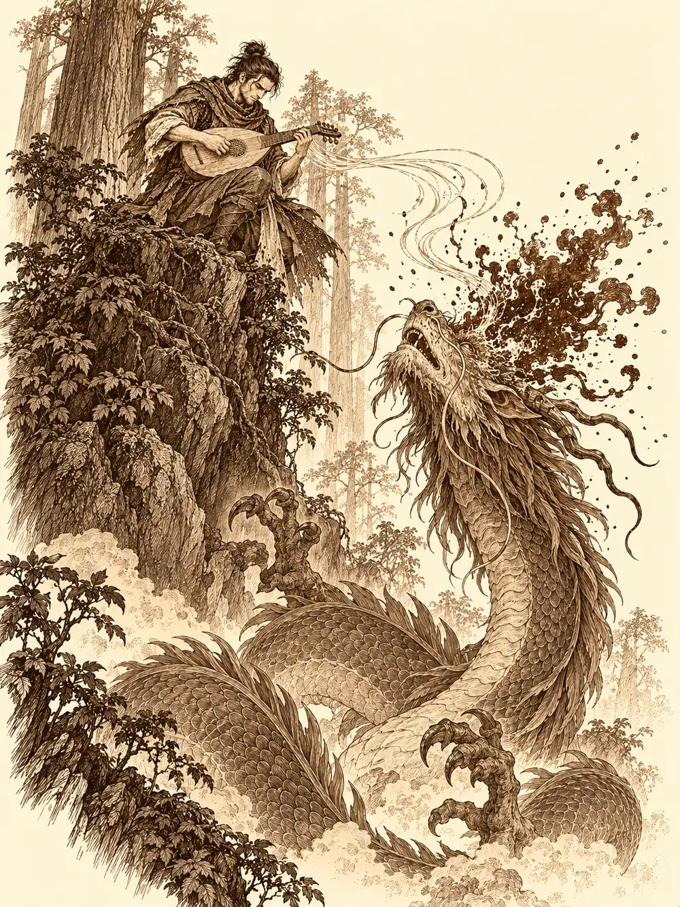

Capítulo 29
Un carpintero en apuros
Libro II · El favor del shogun
Sirth tenía el collar rojo extendido sobre la mesa, junto a las notas arrugadas que habían ido reuniendo sobre los seguidores de Otakemaru, y llevaba días sin sacar nada en claro. De dónde salían, qué querían, quién fabricaba aquellas chapitas con símbolos que volvían loco a un baku. Entre consulta y consulta le enseñaba cosas a Shizuka, que lo escuchaba a medias.
Guxi y Jin seguían enterrados en papeles. Hiki tocaba el piano de la base, o lo intentaba, con una melancolía que se colaba por todas las rendijas. Hayate decidió que aquello no podía seguir así y le puso la mano en el hombro.
"Vamos, triste. Hay que salir un rato".
"¿Acaso eres capaz de ver la alegría que hay en tanta abundancia?".
"Seguro que en el bar hay alguien llorando. Te gustará".
Salieron. Alguien abrió la puerta de los ojos con cierto asco, porque le daba grima, y Hiki comentó al pasar que en aquella casa siempre se dejaban todas las puertas abiertas. Y en cuanto pisaron la calle oyeron jaleo. Música, cánticos, risas. Venía del norte.
Por el camino avanzaba un carro tirado por monos. Delante iban otros monos tirando pétalos al aire; a los lados, más monos tocando instrumentos y recitando alabanzas, todos vestidos con túnicas naranjas. Y arriba, de pie en el carro, con una corona de flores y hojas trenzada por él mismo y la expresión serena de un sabio, iba Sun Gukon. De cuando en cuando se llevaba a los labios una ocarina y tocaba unas notas, no del todo bien, pero con empeño. A los mirones les iba tirando rosarios.
"¡Alabad al gran Sun Gukon, aquel que dominó los cielos y derrotó a todos los dioses!", cantaban los monos.
Hayate se volvió hacia Sirth.
"Se ha unido a una secta".
"Ha fundado una", corrigió el clérigo.
El carro se detuvo delante de ellos. Sun bajó con parsimonia, abrió los brazos y los fue estrechando uno a uno.
"Mis hermanos de armas. Mis hermanos de otra madre".
A Sirth lo abrazó, aunque el clérigo se quedó rígido como un palo. A Hayate lo llamó su palomo favorito. Al llegar a Hiki se detuvo, porque no lo conocía, pero lo abrazó también y le colgó un rosario al cuello, y el bardo de la tragedia, en lugar de apartarse, se puso a acompañar con el laúd los cánticos de los monos.
"Ay, qué melodía tan hermosa", suspiró Sun. "Os he echado de menos".
Les explicó que aquellos amigos suyos habían decidido ayudarlo en su camino a la iluminación. Lo llamaba Buconismo, con mayúscula, como quien bautiza a un hijo. No era una secta, insistió, sino una filosofía de vida: se había desprendido de las cosas terrenales para centrarse en su felicidad y en la de quienes lo rodeaban.
"¿Entonces eres pacifista?", preguntó Hayate.
"Pacifista no. Si me tocan las narices, el bastón sigue donde estaba".
Mandó a los monos aparcar el carro sin molestar a los vecinos y dispersarse por el pueblo cantando sus alabanzas, a ver si alguien quería unirse. Hiki se llevó a unos cuantos detrás de él como el flautista de las ratas. Sirth, de camino a la taberna, le recordó en voz baja a Hayate la historia de un hombre que una vez había montado algo parecido, con ilusiones y milagros, y lo mal que había acabado.
En la taberna, Sun abrazó a Shiro con más fuerza que a nadie y le puso también un rosario. Shiro le sirvió el sake y, de vuelta a la cocina, se lo quitó.
"¿Y dónde está mi querida Zia?", preguntó Sun.
Le dijeron que la habían visto hacía poco, en el torneo y luego en la defensa del pueblo contra los gatos, escondida entre las sombras.
"Qué valiente. Y qué hermosa. No tengo prisa. Ya me la encontraré cuando el camino lo quiera".
Por las mesas corría un rumor. Había llegado a Ukio un carpintero famoso, el más famoso de todo Kuroto, un hombre al que le faltaba una pierna. Decían que estaba en la tienda de la madame del burdel. Era el que debía ocuparse de las obras del casino.
Lo encontraron allí, con la madame, quejándose a voz en grito con una voz bastante aguda. Se llamaba Takashi. Tenía un proyecto nuevo, y para completarlo necesitaba a su primo, un leñador que vivía en las afueras del bosque y llevaba varios días desaparecido.
"Es raro en él. Si conseguís traerlo aquí, sano, os pagaré".
Alguien preguntó si cobraban también en caso de encontrarlo muerto. Takashi dijo que le gustaría encontrarlo vivo, y otro bromeó con que, si hacía falta, siempre se le podía animar un poco. Aceptaron sin fijar precio.
Eran dos días de camino en carro. Sirth se pasó buena parte del trayecto recordándole a Sun que llevaba meses sin pagar su parte de los gastos de la base, con la niña y el bebé por alimentar, y al mono se le marcaba una vena en la frente, pero sostuvo la sonrisa serena. En un alto sacó la ocarina y tocó para sus compañeros una melodía que, para sorpresa general, sonó bastante bien. Hiki lo acompañó, y en las notas del bardo hubo algo que los hizo sentirse un poco más fuertes.
El bosque del leñador era de secuoyas, troncos tan anchos que entre ellos podía pasar un carro. Lo dejaron atrás porque no había forma de avanzar con él, y siguieron a pie. No hizo falta buscar mucho. Un cartel enorme anunciaba la cabaña.
"Pobres de aquellos que se pierden teniendo aquí un cartel tan grande", murmuró Hiki.
Junto a la cabaña, un hombre gigantesco estaba talando una secuoya con un hacha todavía más grande que él.
"¿Qué demonios hacéis en mi bosque?".
Le explicaron que venían de parte de Takashi, que estaba preocupado por su primo y que creían que era él.
"No puedo ir. Estoy cazando una bestia, y hasta que no la cace no me pienso mover".
"No está cazando", observó alguien. "Está talando árboles".
"Algo tendré que hacer mientras espero. Vendrá en cualquier momento. Se cree el nuevo rey de este bosque".
Sun se escupió en las manos y sacó el bastón. El leñador echó la cabeza hacia atrás y gritó hacia la espesura en una lengua áspera y sibilante. Hiki murmuró unas palabras que le permitían comprender cualquier idioma y fue traduciendo, sin inmutarse.

"Ven aquí, lagarto traidor de...".
No terminó la frase. Del norte llegó un batir de alas enorme, y entre las copas de las secuoyas descendió un dragón verde. No era de los más grandes, pero ninguno de ellos había visto nunca un dragón, y aquel era lo bastante grande. Aterrizó junto al árbol a medio talar, furioso, con la cola azotando el suelo.
Hayate se escondió a media altura de un tronco y esperó, sin saber si la bestia iría también a por ellos. Lo supo enseguida.
El leñador cargó primero, con hachazos que hacían retumbar el suelo. Sun saltó sobre el dragón con el bastón en alto y falló. Falló otra vez. Intentó impulsarse con el bastón para alcanzarlo en el aire y no llegó. Le lanzó un dardo. La serenidad que había traído de su retiro no le estaba sirviendo de mucho, y el mono empezó a cabrearse de la manera más terrenal posible.
"¡Deja de esquivar, dragón de...!".
Hiki tocaba sin descanso. Le susurraba a Sun palabras de ánimo y al dragón otras muy distintas, que se le metían en la cabeza y lo obligaban a recular entre los golpes de los demás. Hayate, ya decidido, disparaba flechas cargadas de relámpagos. Sirth había trepado al tejado de la cabaña y desde allí alzó su símbolo sagrado. Alrededor del dragón se formó una nube extraña. Hiki, al mismo tiempo, tocó una nota grave, trágica, y la magia del clérigo mordió de otra manera, más hondo.
Todo se marchitó. Las hojas, la hierba, y el dragón, que se secó por dentro como si le hubieran arrancado toda el agua del cuerpo y se desplomó delante de Sun.
El leñador se acercó y le dio una patada.
"Patético".
Entonces el cuerpo empezó a sacudirse con violencia. De la boca, de los ojos, de todos los orificios, empezó a manar un líquido negro, viscoso, horrible. El dragón se levantó. Ya no parecía vivo, y tampoco parecía muerto del todo. Miró a Sirth, que era quien lo había matado, y le escupió encima su aliento venenoso.
La segunda pelea fue peor que la primera. El dragón voló hacia el clérigo. Sirth se rodeó de un escudo, se apartó por encima del tejado, aguantó el zarpazo. Sun por fin acertó y le dio un testarazo en el pecho que lo hizo tambalearse. Hayate seguía disparando desde el aire. Y Hiki, encaramado a un lugar alto desde el que podía ver a la bestia, tocó unos acordes que se transformaron en susurros. Los susurros entraron en la cabeza del dragón, y la cabeza le estalló desde dentro.
Aquella masa negra salpicó por todas partes, sobre todo a Sirth, que quedó cubierto de pies a cabeza.
El clérigo se bebió una poción para recuperarse y, en lugar de tirar el frasco vacío, lo llenó de aquel líquido. Le pareció una especie de aceite mágico, algo que no podía salir de un dragón por naturaleza. Nadie supo decirle qué era.
Esta vez el dragón no se movió. Sun le dio unos golpecitos con el bastón, por si acaso.
El leñador le dio a Sun una palmada en la cabeza que casi lo hunde en el suelo.
"Eres fuerte, chaval. ¿Cómo te llamas?".
"Sun Gukon. Rey".
"Yo me llamo Ragnar". No era un nombre de la zona, explicó; iba de un lado a otro, le gustaba cazar y talar. Luego se le iluminó la cara. "¿Mi primo? Ah, sí. Le tenía que llevar madera".
No se había perdido: se le había olvidado.
El dragón no daba para mucho. Entre la corrupción y la magia que lo había matado, la piel y las membranas de las alas estaban podridas, inservibles. Sun pasó un buen rato examinando las escamas una por una, con una bolsa pequeña de piel en la mano, y consiguió apartar unas pocas que estaban sanas. Quizá le valieran para una armadura.
De vuelta hacia el carro se cruzaron con un hombre. Era humano, muy pálido, y caminaba solo por el bosque como si buscara algo.
"Busco una mascota", dijo. "Se me ha perdido. Es un poco más grande que un perro".
Le contestaron que por allí solo habían visto ardillas y algún lagarto. Alguien dijo serpientes. Nadie mencionó el dragón. El hombre se despidió con educación, dijo que era un pequeño emprendedor que había venido a hacer unas cosas, y se metió entre los árboles. No les gustó nada. Decidieron seguirlo.
Fue un desastre. Sirth iba pisando ramas secas a cada paso, y el hombre se volvió.
"¿Se os ha perdido algo?".
Hayate se puso a coger flores, muy concentrado. Sirth hizo lo mismo y empezó a trenzar una corona. Hiki aseguró que ya se marchaban. El desconocido sonrió.
"Adiós, chicos".
Y desapareció en el aire.
Ragnar volvió con un carro gigantesco cargado con una secuoya entera, que arrastraba él solo, a pulso. Ataron su propio carro detrás. Por el camino le preguntaron por el dragón. Solo sabía que llevaba un mes dando guerra, desde que él se mudó, y que siempre venía de la misma dirección.
Tardaron otros dos días en llegar a Ukio. En la taberna, Takashi abrazó a su primo.
"Cuánto tiempo. ¿Dónde te habías metido?".
"Ya sabes cómo soy. Me pierdo".
Takashi les pagó cincuenta monedas a cada uno. Sun protestó: habían tenido que matar dos veces a un dragón. El carpintero le recordó que él había pedido que le trajeran a su primo, no que cazaran a nadie. Si querían, les sugirió, podían buscar el nido de la bestia, que los dragones solían guardar tesoros, pero no prometía que lo hubiera. Alguien le dio la razón al carpintero. La tarifa no cambió.
En la base, Shizuka los recibió con los brazos en jarras.
"¿Dónde os habíais metido? Lleváis cuatro días fuera".
Sirth, que todavía olía al líquido negro aunque se había frotado a conciencia, suspiró, dejó el frasco en un estante y le dijo a la niña que iba a prepararle la cena.
Lejos de allí, a orillas de un lago, el hombre pálido se arrodilló junto al agua y vació en ella un frasco de líquido negro. La mancha se extendió despacio sobre la superficie. Al rato bajaron a beber los animales del bosque, grandes y pequeños, acercándose con cautela.
Cuando levantaron la cabeza, sus ojos ya no eran los mismos.